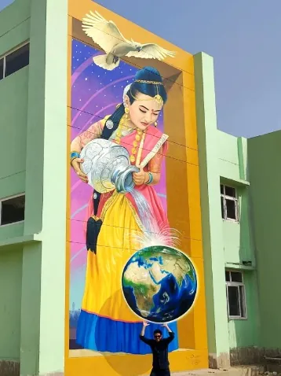

Dazer

artista muralista con sede en Monterrey
Sobre él
Dazer es artista muralista con sede en Monterrey, México. Pinta murales realistas, arte urbano en 3D y obra al óleo.
Su trabajo ha llegado de Monterrey a Alemania y a Washington D. C.
En Monterrey intervino ocho columnas de la Línea 4 del Metrorrey con «El partido de cada día», una ciudad de muchas historias contada como un mismo juego.
01Obra
Vamos a curar el agua.— Dazer
02Lo que hace
- 01
Murales
Murales realistas para fachadas, espacios públicos y marcas.
- 02
Arte urbano 3D
Piezas en piso que juegan con la perspectiva.
- 03
Pintura al óleo
Obra de caballete: paisaje y figura.
03Trayectoria
- 8,356personas siguen su trabajo en Instagram
- 1er lugar en categoría 3D con «Vamos a curar el agua»Street Art Wilhelmshaven, Alemania
- «El partido de cada día», ocho columnas de la Línea 4Metrorrey, Monterrey
- «Loving Dead: Amando Muertos», mural de Día de MuertosArtbank, Washington D. C.
- «Tan fluida como el agua», mural inspirado en la cultura de la Indiamural